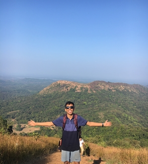
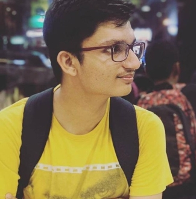

BIO STUFF


ANIRUDH MAIYA
CEO/Creative Director
Anirudh Maiya is CEO, creative director, and resident
expert in animals. He is a sophomore pursuing CS
at PES University.He started youplay.com with his
classmate Sangam when they both got kicked out of the
Chemistry Lab and had nothing better to do.
Sangam Kedilaya
CTO/Product Director
Sangam Kedilaya is CTO, Product Director and claims
to follow updates on Modi every single day of his life.
He is a sophomore pursuing CS at PES University.
VADA PAV > LIFE.